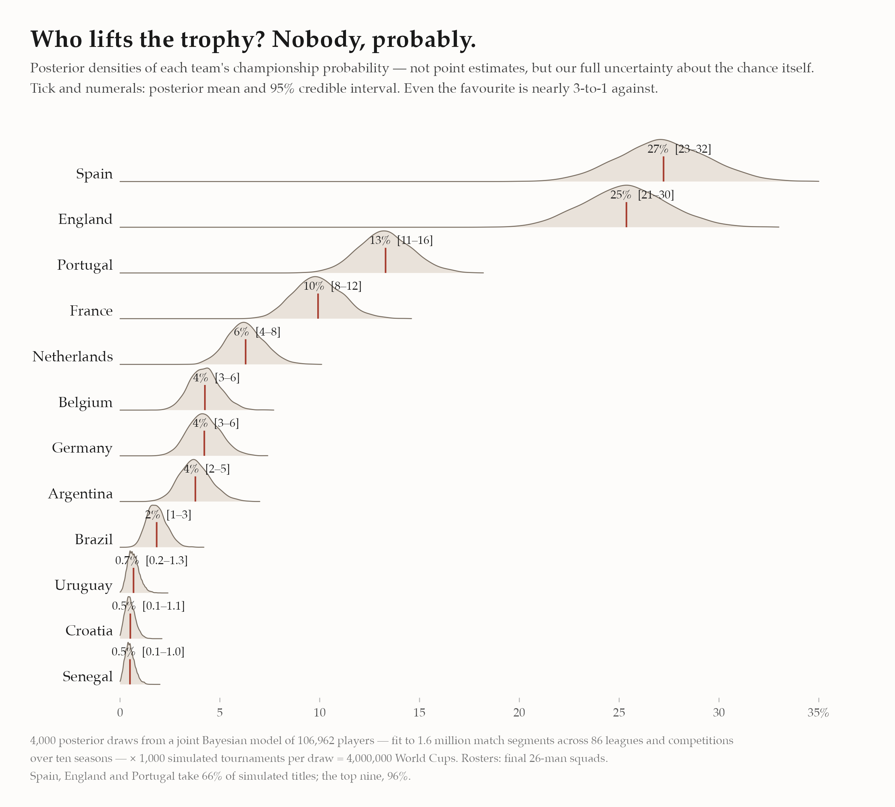
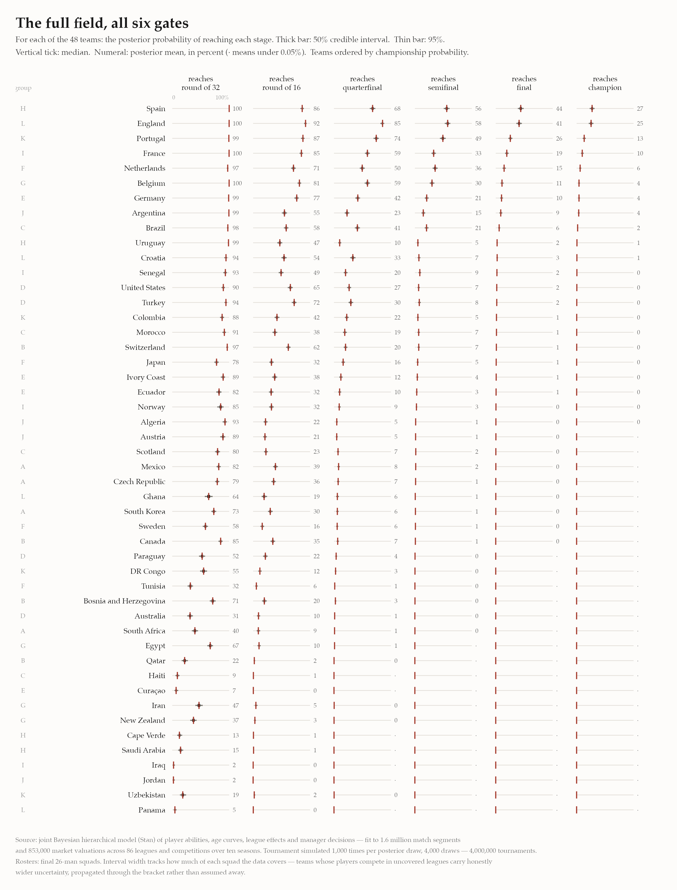

Four million World Cups before the first whistle
The 2026 World Cup kicks off today. I simulated the whole tournament four million times — and unlike most forecasts you’ll read this week, mine tells you how sure it is.
The number everyone publishes, and the number almost nobody does
Every World Cup forecast gives you a number: Spain 27%. Useful, but it hides a question that matters just as much: how well do we actually know that number? A model that has watched a player’s whole career should be more confident than one squinting at six months of form. A squad full of household names playing in well-measured leagues should carry tighter uncertainty than one whose players we’ve barely observed.
So I don’t publish a probability. I publish the distribution of the probability — a full Bayesian answer.

Spain leads at 27% [23–32]. That bracket isn’t decoration; it’s the model saying given everything I know about every Spanish player — and everything I don’t — the title chance is somewhere in here. Even the favourite is nearly 3-to-1 against. Football’s single-elimination format guarantees that nobody, however good, is ever likely to win.
A few things only visible because the answers are distributions:
- Spain vs England is closer than the means suggest. Their densities sit nearly on top of each other (27% vs 25%), and across the posterior, Spain is the stronger pick in only 69% of draws. Germany vs Argentina is even tighter — 4.2% vs 3.8%, with Germany ahead in just 64% of draws. Any forecast ranking those pairs cleanly is reporting noise.
- Concentration at the top: Spain, England and Portugal account for 66% of simulated titles; the top nine take 96%. The other 39 teams share what’s left.
- The boldest call is Brazil at 1.8%. The market says roughly ten percent; the model looks at the actual 26 names — Casemiro at 34, Neymar at 34, Alex Sandro at 35 — and prices an XI past the peak of its age curves. One of those views is wrong, and that disagreement is exactly what a generative model is for: every assumption behind the 1.8% is inspectable.
Six gates, forty-eight teams
The tournament is six gates: reach the round of 32, the 16, the quarters, the semis, the final, win it. Below, every team’s chance at every gate — with its 50% and 95% credible intervals, because a number without its uncertainty is an opinion.

Reading it as a fan:
- England’s strange shape. England is more likely to reach the quarterfinal (85%) than any other team, because their draw is soft exactly where others’ is brutal: their projected round-of-16 tie is a 93% pass — nearly a bye — while Argentina’s is a 42% coin flip that leans against them. Bracket geography is destiny.
- Sixteen teams will fly home after three games. The bottom of the table is not pessimism; it’s arithmetic plus evidence. Iraq’s 2.4% chance of escaping the group is what happens when most of a squad plays in leagues the data doesn’t cover.
Curaçao: missing data, properly imputed — then the data arrived
When this forecast was first built, no announced Curaçao player matched the modeled leagues, so the model faced a missing-data problem. The Bayesian answer is imputation from the model itself: their abilities were drawn, each posterior draw, from the population distribution of player abilities the model had already learned. No made-up rating — just a wide, honest interval, propagated through every match of the bracket: their round-of-32 chance read 10% [2–25].
Then the final 26-man squads were announced, most of Curaçao’s squad turned out to play in covered leagues after all, and the imputation was replaced by actual player histories. The forecast is now 7% [4–10] — the interval collapsed from twenty-three points wide to six, and the mean fell, because the population prior had been a touch generous to them. That movement is the method working: when data is missing you say so with width, and when data arrives, the width gives way to it.
This is the part I’d highlight for anyone evaluating modeling work: missing data handled inside the same generative model as everything else, so the answer carries exactly as much uncertainty as the data warrants — no more, and no less, at every stage of knowledge.
What’s under the hood
This isn’t an Elo system or a betting-odds aggregator. It’s a single joint Bayesian hierarchical model — more than 220,000 parameters, hand-tuned C++ gradients, fit with Stan to ten seasons of data across 86 leagues and competitions: 1.6 million match segments, 853,000 market valuations, and 27,000 national-team selection events, covering 106,962 players. Jointly, the model learns:
- per-player offensive and defensive ability, correlated, with position-specific age curves (a 23-year-old midfielder and a 31-year-old striker age differently);
- league scoring environments (the same player produces different goal rates in different competitions — measured, not assumed);
- manager behaviour — who gets selected, who gets substituted, and when, as a function of ability and game state;
- market values, national-team call-ups, and career survival, which sharpen player abilities through entirely different channels of evidence.
Because everything is estimated jointly, uncertainty flows end-to-end. The tournament simulation isn’t bolted on: for each of 4,000 posterior draws I build every nation’s best XI (a 4-2-3-1, selected by that draw’s abilities), score matches with the model’s own goal process — zero-inflated, with match-level shared frailty — and play all 103 matches that decide the title, 1,000 times over. Four million World Cups, each one consistent with a different, fully-specified state of belief about every player the data has measured.
The same machinery that simulates a tournament answers the questions clubs actually pay for: what is this player worth, how will he age, what does he add to this squad against this opposition. The World Cup is just the fun part.
After the whistle
Today at the Azteca, the first whistle collapses four million World Cups into one. Every density on this page narrows, match by match, into the single tournament we actually get to watch — one draw from the distribution, unrepeatable, and quite possibly won by nobody the model favours. That isn’t a failure of the forecast; it is the forecast. A 27% favourite goes home empty nearly three times in four. The point of simulating four million World Cups was never to predict the one that happens. It was to know exactly how surprised to be.
Model: joint Bayesian hierarchical model in Stan with custom C++ gradient kernels. Rosters: the final 26-man squads, matched to the player database, with each player’s age taken at the tournament itself. Venue advantage not modeled (neutral-site assumption). Penalty shootouts treated as coin flips — even four million simulations can’t tell you who blinks from twelve yards. Quietly updated June 12, 2026, from the provisional squad lists used at first publication to the final squads — the numbers here are the current pre-tournament forecast.